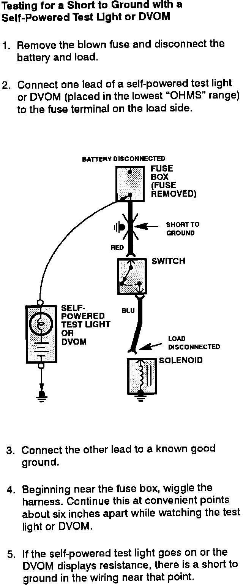

Operation CHARM
: Car repair manuals for everyone.
Home
>>
Acura
>>
1989
>>
Legend Coupe V6-2675cc 2.7L SOHC FI
>>
Repair and Diagnosis
>>
Body and Frame
>>
Roof and Associated Components
>>
Sunroof / Moonroof
>>
Diagrams
>>
Diagnostic Aids
>>
Troubleshooting Tests
>>
Testing For A Short With A Self-Powered Test Light or DVOM
Testing For A Short With A Self-Powered Test Light or DVOM
Troubleshooting Tests: Testing For Short To Ground With A Self-Powered Test Light Or DVOM:
